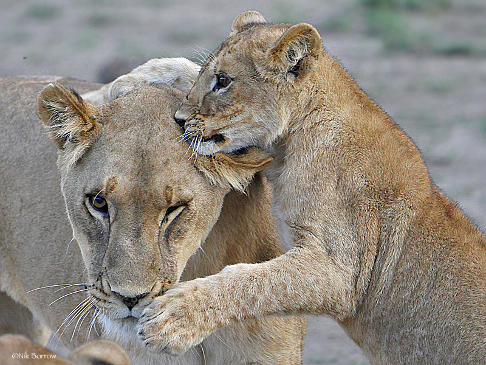
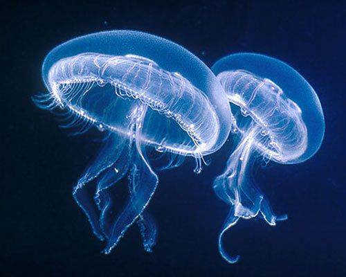
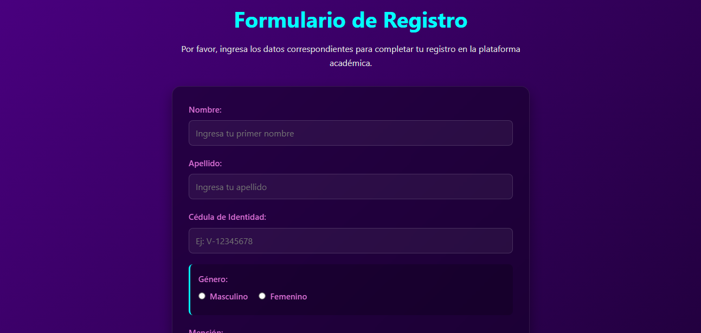

Animales Vertebrados
Especies que poseen un esqueleto interno óseo o cartilaginoso y una columna vertebral. Explora los mamíferos, aves, reptiles, anfibios y peces.
Ver VertebradosLos animales son seres vivos pluricelulares y heterótrofos que pueblan nuestro planeta. Para facilitar su estudio y organizar la información, se clasifican en dos grandes grupos según la presencia o ausencia de una columna vertebral articulada.

Especies que poseen un esqueleto interno óseo o cartilaginoso y una columna vertebral. Explora los mamíferos, aves, reptiles, anfibios y peces.
Ver Vertebrados
Descubre el numeroso y variado conjunto de seres vivos que carecen de esqueleto interno articulado. Desde esponjas marinas hasta artrópodos marinos y terrestres.
Ver Invertebrados
Accede al formulario de control escolar para la carga y validación de datos del estudiante, selección de la mención y carga de soportes digitales.
Ir al RegistroComprender la taxonomía y división del reino animal es fundamental no solo para las ciencias biológicas, sino también como base de proyectos de desarrollo socio-tecnológico enfocados en la organización eficiente de datos y la educación multimedia interactiva.